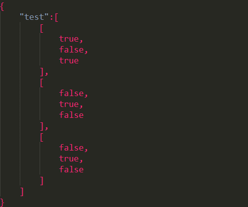

单线程:
ros::spin(); 所有调用程序从ros::spin()开始调用，直到节点关闭，ros::spin()才有返回值。ros::spin()一旦运行起来便不会退出返回，直到shunt down。
ros::spinOnce()，单线程另一种形式，主动周期性调用。
回调函数是一直等待在回调队列中，只要条件满足便会发生回调。而ros::spin()的作用，便是创造线程给回调函数去执行，这样多线程就不会影响其他的作业。
多线程:
对于只订阅1个topic的node,ros::spin()进入接收循环。每当有订阅的topic发布时，则进订阅topic的回调函数进行处理与操作。但是当一个节点要接收和处理许多topic，并且这些数据产生的频率各不相同的时候，如果在其中一个回调函数里耗费太长的时间，会导致其他的回调函数阻塞，从而使数据丢失。这是便需要使用多线程来保证数据的流程性。
ros::NodeHandle nh;
ros::AsyncSpinner spinner(1);
spinner.start() //线程开始
ros::waitForShuntdown() //该线程在销毁时自动停止
< xacro:include filename="(find cutter_description)/urdf/ur10.xacro > #类似于头文件
< xacro:cutter frame_name="tool0" > #类似于创建新的实例
< group > name = "manipulator"
< chain > base_link = "base_link" tip_link = "cutter"
< /group >
< node name="joint_state_publisher" pkg = "joint_state_publisher" type = "joint_state_publisher">
< rosparam name="/source_list">[/move_group/fake_controller_joint_states]
< node name="joint_state_publisher" pkg = "joint_state_publisher" type="joint_state_publisher" >
< param name="/use_gui" value="false" />
< param name="/rate" value="1" />
< /node>
注意：当把/use_gui置为true的时候，可以出现一个调节各个关节的gui界面。/rate则是用来规定publisher的发布频率
// 情况1
ros::NodeHandle nh;
ros::Subscriber sub = nh.subscribe("A", 1, callbackFunc);
// Do something
...
// shutdown the subscriber (this should be unnecessary)
sub.shutdown();
// Now change the subscriber
sub = nh.subscribe("B", 1, callbackFunc);
//*********************************************************
// 情况2
void callbackFunc()
{
// Do something
...
sub.shutdown();
}
int main()
{
...
ros::Subscriber sub = nh.subscribe("A", 1, callbackFunc);
}
// http://ros-users.122217.n3.nabble.com/Callback-once-td918994.html 原网址
set(THIS_PACKAGE_INCLUDE_DIRS)
move_group/include
)

所谓数组的数组;遍历方法：
void jsonCallback(const std_msgs::String::ConstPtr& msg){
const char* input = msg->data.c_str();
Json::Reader reader;
Json::Value JsonRoot;
bool parsingSuccessful = reader.parse(input, JsonRoot, false);
if (!parsingSuccessful) {
ROS_ERROR("Failed to parse JSON from string");
}
const Json::Value& name = JsonRoot["name"];
if (name.empty()) {
ROS_ERROR("Failed to parse 'name'");
}
const Json::Value& geometry_name = JsonRoot["geometry_name"];
if (geometry_name.empty()) {
ROS_ERROR("Failed to parse 'geometry_name'");
}
Json::Value& vertices = JsonRoot["vertices"];
geometry_msgs::Pose tmp;
for (Json::ArrayIndex i = 0; i < vertices.size(); i ++) {
Json::Value& vertex = vertices[i];
if (vertex.size() == 3) {
...
} else {
ROS_ERROR("Failed to parse JSON 'vertex'");
}
}
sub_json_data.shutdown();
}
将namespace BOOST_JOIN(BOOST_TT_TRAIT_NAME,_impl) {
..
}
改为
#ifndef Q_MOC_RUN
namespace BOOST_JOIN(BOOST_TT_TRAIT_NAME,_impl) {
#endif
...
#ifndef Q_MOC_RUN
}
#endif
// Using subscriber/callback functiono inside of a class C++
Class Version CallBack
sub = n.subscribe("/topic", 1000, &Example::CallBack, this)
// &Example::CallBack 指向类的成员函数的函数指针 function pointer to the member function
// this:object instance for which you want to callback called
class Example{
public:
Example(ros::NodeHandle nh){
sub = nh.subscribe("/topic", 1000, &Example::CallBack, this)
}
void CallBack(const sensor_msgs::PointClou2Ptr& msg){
}
protected:
ros::Subscriber sub;
}
// another way: Bind arguments to arbitrary functions
sub = n.subscribe("/topic", 1000, boost::bind(&Example::CallBack, this, _1) )